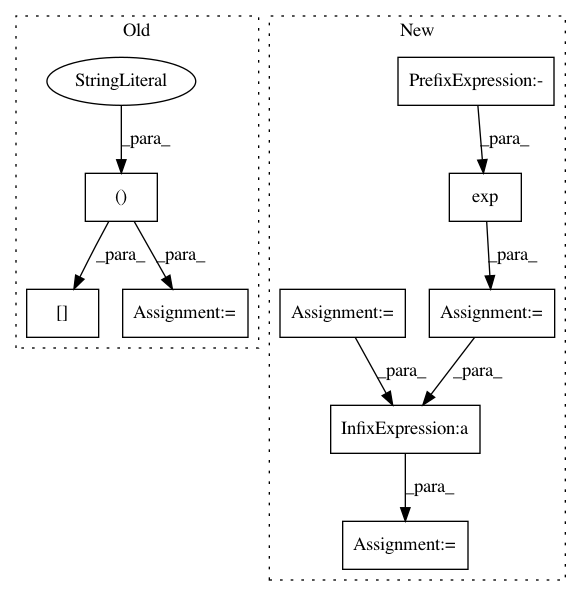

e3c2740c3f3e2451dd1dfed82a1cdbba63139ba4,dipy/reconst/fwdti.py,,_wls_iter,#Any#Any#Any#Any#Any#Any#Any#,308
Before Change
all_new_params = np.dot(np.dot(invWS2W, WS2), y)
// compute F2
S0r = np.matlib.repmat(all_new_params[:, 6], nvol, 1)
SIpred = (1-FS)*np.exp(np.dot(W, all_new_params)) + FS*S0r*SFW
F2 = np.sum(np.square(SI - SIpred))
// Select params for lower F2
After Change
df = df * 0.1
fs = np.linspace(flow+df, fhig-df, num=ns) // sampling f
// repeat fw contribution for all the samples
SFW = np.array([fwsig,]*ns)
FS, SI = np.meshgrid(fs, sig)
for r in range(riterations):
// Free-water adjusted signal
S0 = np.exp(-params[6])
y = np.log((SI - FS*S0*SFW.T) / (1 - FS))
// Estimate tissue"s tensor from inv(A.T*S2*A)*A.T*S2*y
S2 = np.diag(np.square(np.dot(W, params)))
WS2 = np.dot(W.T, S2)
invWS2W = np.linalg.pinv(np.dot(WS2, W))
all_new_params = np.dot(np.dot(invWS2W, WS2), y)
// compute F2
S0r = np.exp(-np.array([all_new_params[6],]*nvol))
SIpred = (1-FS)*np.exp(np.dot(W, all_new_params)) + FS*S0r*SFW.T
F2 = np.sum(np.square(SI - SIpred), axis=0)
// Select params for lower F2
In pattern: SUPERPATTERN
Frequency: 3
Non-data size: 9
Instances
Project Name: nipy/dipy
Commit Name: e3c2740c3f3e2451dd1dfed82a1cdbba63139ba4
Time: 2016-08-29
Author: rafaelnh21@gmail.com
File Name: dipy/reconst/fwdti.py
Class Name:
Method Name: _wls_iter
Project Name: nipy/dipy
Commit Name: c54f3fde1c5210e090a0cd9ca95d36bdec5def8d
Time: 2016-08-29
Author: rafaelnh21@gmail.com
File Name: dipy/reconst/fwdti.py
Class Name:
Method Name: _wls_iter
Project Name: pyannote/pyannote-audio
Commit Name: 3b7c410840e6e8cb54e9290494acde04d2942c18
Time: 2017-05-03
Author: bredin@limsi.fr
File Name: pyannote/audio/embedding/approaches/triplet_loss.py
Class Name: TripletLoss
Method Name: loss